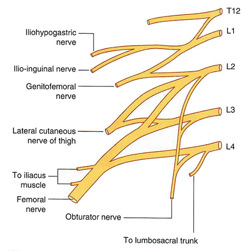

Module 2 - Nerves, Vessels and Lymphatic Drainage: Page 2 of 7
| Add the obturator nerve. Be sure to rotate and locate the obturator nerve as it passes through the obturator foramen and canal. | |
| Add the femoral nerve. |
|  |
Pay particular attention to the obturator, genitofemoral, pudendal, coccygeal and pelvic splanchnic nerves. Note the similarity of the origin of the femoral and obturator nerves (L2, L3, L4).